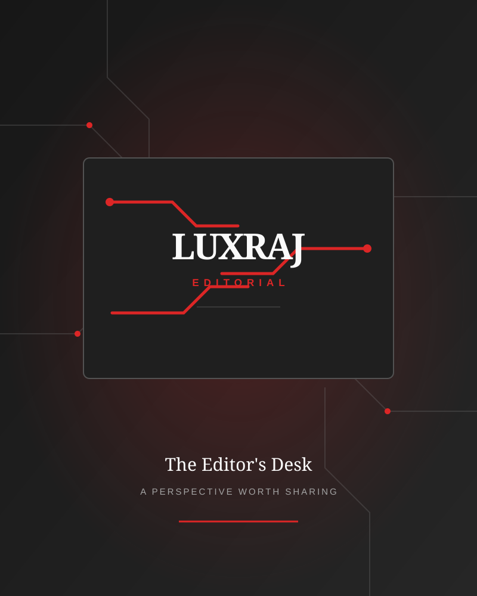

Start with the problem, not the product.
Technology stories are more useful when they begin with the problem a reader is trying to solve.
Sample notes will load from the central editorial Markdown library.
Loading the editorial notes…
FROM THE EDITOR'S DESK
Short thoughts, observations and recommendations on technology, engineering and the choices that shape the world around us.
THE EDITOR'S DESK
Technology stories are more useful when they begin with the problem a reader is trying to solve.
Sample notes will load from the central editorial Markdown library.
Loading the editorial notes…

Sample writing and image references are provided for layout and interaction testing. Replace them with your own editorial material before treating this page as a published column.